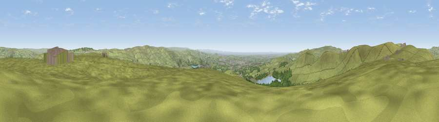

Viewpoint near Wardle
#12599 in England · top 19% of its area beats it · near WardleWhere it is
The exact computed spot (SD 92125 19325). Click the marker for map links.
The view, rendered

A 360° render of this exact spot computed from the terrain model, tree cover and land cover — summer colours, afternoon light, calibrated against photographs of famous viewpoints. Real trees, hedges and buildings will differ in detail.
The panorama
Grey silhouette: terrain skyline in each direction (720 bearings, Earth curvature and refraction included). Dashed green: skyline with trees (+15 m) and buildings (+8 m) as obstacles. Blue strip: how far the ground is visible on each bearing.
Where the view opens
Wedge length = distance to the farthest visible ground on that bearing (vegetation-aware). Rings at 10, 25 and 50 km.
What fills the view
86% grassland · 6% woodland · 6% built-up · 1% water
Angular shares of the visible panorama (visual magnitude), not map area. Landscape diversity 0.24 (0–1 Shannon).
Key numbers
More beautiful places nearby
The staircase of upgrades: each row has a higher view potential than everything closer. Driving times are estimates from straight-line distance, calibrated against real road routing — check an actual route before setting out.
| Place | Direction | Drive | Score |
|---|---|---|---|
| Viewpoint near Shawforth | WNW · 2 km | ~5 min | 62.2 |
| Viewpoint near Whitworth | WSW · 3 km | ~6 min | 67.2 |
| Viewpoint near Timbercliffe | ESE · 6 km | ~13 min | 68.7 |
| Viewpoint near Denshaw | SSE · 10 km | ~19 min | 69.3 |
| Viewpoint near Edenfield | W · 10 km | ~19 min | 77.5 |
| Darwen Hill | W · 24 km | ~40 min | 80.7 |
| White Brow | WSW · 27 km | ~43 min | 82.9 |
| Warton Crag | NW · 68 km | ~92 min | 83.2 |
53.67034, -2.12067 · source: screening · position refined by local search. Computed location — check access rights before visiting.